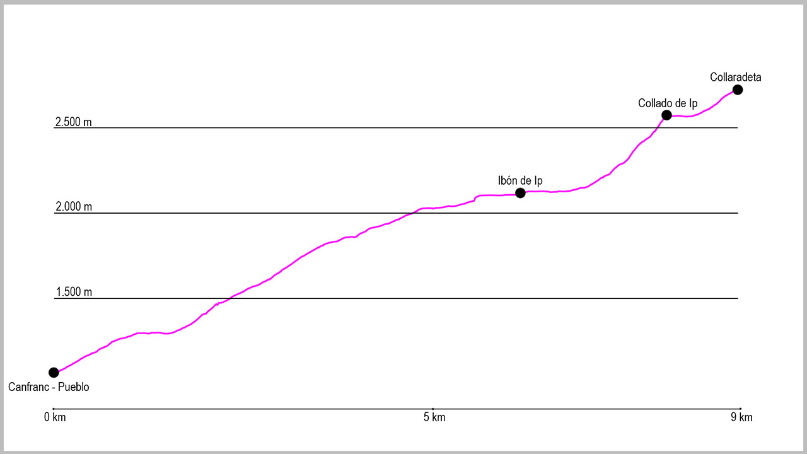

Tomaremos la salida de la ruta en el puente de arriba de Canfranc-Pueblo. Aquí cogeremos la pista que sale del aparcamiento y la seguiremos de manera ascendente. A unos 50 metros de la salida, a nuestra derecha saldrá un camino muy cómodo que tomaremos y que nos llevará poco a poco a ganar altura. Cuando llevemos aproximadamente 1 kilómetro y el camino empieza a meterse en el valle de Ip oobviaremos una bifurcación que sale a nuestra derecha para continuar nuestra progresión hacia el ibón de Ip. Este sendero es fácil de seguir y está marcado con marcas de PR e hitos.
Enseguida nos situará cerca de los 2.000 metros de altitud, momento en el cual salimos del bosque y empezamos a movernos por zonas más llanas y con caos de piedras, aunque el firme sigue siendo cómodo.
Justo antes de llegar a unos edificios blancos cruzaremos el río que tendremos a nuestra izquierda y subiremos a coger una antigua pista que nos llevará hasta el refugio y posteriormente la presa de Ip Cruzaremos el dique de la presa y al final del mismo giraremos a nuestra izquierda para afrontar un tramo bastante llano pero lleno de bloques de piedras. Los hitos y las marcas nos ayudarán a seguir el sendero, hasta que lleguemos a una pared con un único paso. Aquí habrá que tener especial cuidado, pero podremos realizar este paso sin excesiva complicación.
Una vez pasado empezaremos la subida hasta el collado de Ip. Una pedrera de casi 500 metros de desnivel positivo nos conducirá hacia él. Seguiremos todo el rato de forma ascendente hacia una gran piedra gris que se erige delante de nosotros, guiados por los hitos que se encuentras en todo este tramo. Tendremos que dirigirnos al collado de su izquierda, donde cuando lleguemos giraremos a la izquierda. Desde este punto, el cuello de Ip, tomaremos como referencia un sendero poco marcado que va en dirección este ganando altura progresivamente hasta que lleguemos a la Ventana del Fraile (un gran agujero en la roca a nuestra izquierda). Poco después de este punto ya divisaremos la cima de Collaradeta, ascenderemos un poco más de distancia manteniendo la dirección anterior y poco después ya solo nos quedará ascender casi en línea recta hasta la cima.
